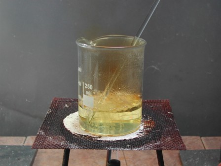
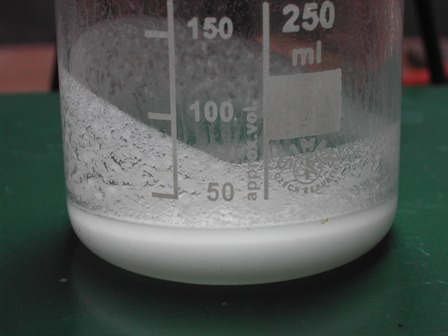
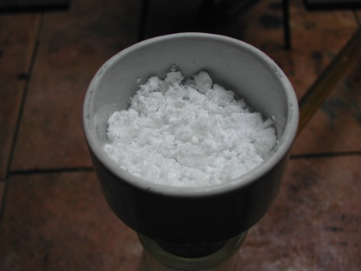
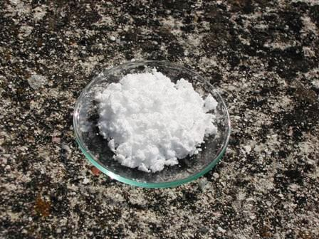

Finalmente riesco a (ri)sporcare un po' di provette! Ne avevo nostalgia.
Ho scelto una sintesina facile fra quelle che mi ero segnato come "da fare"; in realtà avevo già fatto questo esperimento qualche anno fa con pessimi risultati, ed ho voluto riprovare.
Si tratta di preparare un acido aldarico, ovvero un idrossiacido bicarbossilico derivante dall'ossidazione di uno zucchero, nel nostro caso il prodotto sarà l'acido mucico.
Quest'acido è uno stretto parente dello zucchero monosaccaride galattosio, dal quale si differenzia per avere due gruppi carbossilici (-COOH) alle estremità della catena (nella formula lineare), mentre il galattosio ha rispettivamente un gruppo alcolico (-CH2OH) e aldeidico (-CHO).
Il galattosio a sua volta si differenzia dal glucosio per la posizione spaziale degli ossidrili legati ai quattro atomi di carbonio centrali.

Acido mucico
Ossidando vigorosamente un monosaccaride con acido nitrico si produce la trasformazione in due gruppi carbossilici delle funzioni terminali della catena (alcolica e aldeidica) ed un generico acido aldarico ha formula generale HOOC-(CHOH)n-COOH.
Per esempio ossidando il glucosio si produrrebbe acido saccarico (più difficile da isolare e purificare per la sua solubilità), mentre dal galattosio si ottiene con buona resa acido mucico quasi insolubile.
Non volendo partire dal galattosio (di difficile reperibilità), pur sacrificando la resa il Vogel consiglia l'uso del semplice lattosio, che è un disaccaride ma che per idrolisi si scinde in una molecola di glucosio e una di galattosio.
Al punto intermedio della sintesi otterremo perciò una miscela di acido saccarico e acido mucico. La procedura che segue è presa appunto dal Vogel.
Materiale occorrente:
- lattosio
- acido nitrico
- sodio idrossido
- acido cloridrico
- vetreria opportuna
In una capsula o anche in un becher da 150 ml sciogliere 10 g di lattosio in 50 ml diacqua e aggiungere 48 ml di acido nitrico diluito (28 ml di HNO3 conc. + 20 ml di acqua).
Sotto cappa o in ambiente opportuno scaldare a piccola fiamma ed evaporare la soluzione fino a ridurne il volume a 20 ml.


Durante il riscaldamento (la T° arriva al massimo a 105°) si ha costante svolgimento di vapori nitrosi ed ipoazotide.
Raffreddando il prodotto esso assumerà consistenza sciropposa; aggiungere 30 ml di acqua e l'acido mucico si separa perchè poco solubile.
Si filtra facilmente alla pompa e si lava il residuo con poca acqua fredda.

(Dalla soluzione filtrata con opportuna procedura si potrebbe ricavare l'acido saccarico, di identica formula ma che solo per avere un ossidrile che guarda da una parte anzichè dall'altra è solubilissimo in acqua, al contrario del mucico. Potenza della stereochimica!).
Sciogliere il residuo solido nel minimo volume di NaOH diluito (nel mio caso circa 13 ml di NaOH al 10%) e riprecipitare l'acido con HCl diluito fino a netta acidità, sempre oprerando a freddo data che il prodotto ha una leggera solubilità.
Filtrare di nuovo e seccare all'aria.
Eccolo sul vecchio muretto, come una volta!

La mia resa è stata scarsina, 2,7 g di acido mucico puro, che si presenta come una polvere microcristallina bianchissima, inodora e di sapore appena leggermente acidulo.
A cosa può servire l'acido mucico? Assolutamente a nulla... giusto il piacere di prepararlo.
Dalla soluzione di acido saccarico (ometto la procedura, visibile sul Vogel) si può vedere un altro di quei rari sali alcalini quasi insolubili, il saccarato acido di potassio.
Mi sono accontentato di osservare la sua opalescenza in acqua e di lasciarne sedimentare un pochino, giusto il piacere di vederlo.